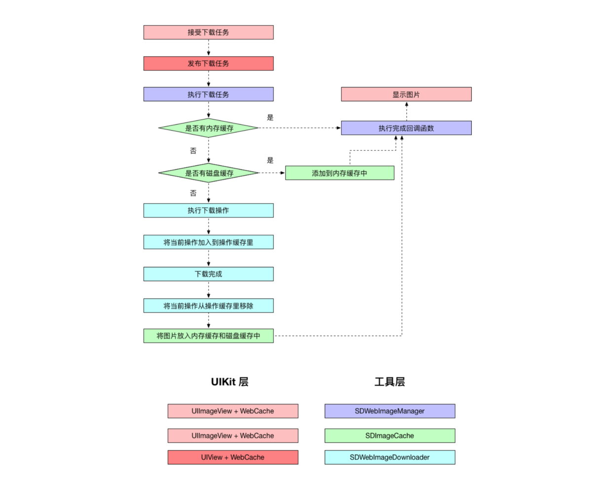

相信对于广大的iOS开发者，对SDWebImage并不会陌生，这个框架通过给UIImageView和UIButton添加分类，实现一个异步下载图片并且支持缓存的功能。整个框架的接口非常简洁，每个类的分工都很明确，是很值得大家学习的
在使用这个框架的时候，只需要提供一个下载的url和占位图就可以在回调里拿到下载后的图片：
[imageview sd_setImageWithURL:[NSURL URLWithString:@"pic.jpg"] placeholderImage:[UIImage imageNamed:@"placeholder"] completed:^(UIImage * _Nullable image, NSError * _Nullable error, SDImageCacheType cacheType, NSURL * _Nullable imageURL) {
imageview.image = image;
NSLog(@"图片加载完成");
}];
这个框架的核心类是SDWebImageManger，在外部有UIImageView+WebCache 和 UIButton+WebCache 为下载图片的操作提供接口。内部有SDWebImageManger负责处理和协调 SDWebImageDownloader 和 SDWebImageCache：SDWebImageDownloader负责具体的下载任务，SDWebImageCache负责关于缓存的工作：添加，删除，查询缓存。
框架的调用流程图：

从这个流程图里可以大致看出，该框架分为两个层：UIKit层（负责接收下载参数）和工具层（负责下载操作和缓存）。
UIKit层
该框架最外层的类是UIImageView +WebCache，我们将图片的URL，占位图片直接给这个类。下面是这个类的公共接口：
// ============== UIImageView + WebCache.h ============== //
- (void)sd_setImageWithURL:(nullable NSURL *)url;
- (void)sd_setImageWithURL:(nullable NSURL *)url
placeholderImage:(nullable UIImage *)placeholder;
- (void)sd_setImageWithURL:(nullable NSURL *)url
placeholderImage:(nullable UIImage *)placeholder
options:(SDWebImageOptions)options;
- (void)sd_setImageWithURL:(nullable NSURL *)url
completed:(nullable SDExternalCompletionBlock)completedBlock;
- (void)sd_setImageWithURL:(nullable NSURL *)url
placeholderImage:(nullable UIImage *)placeholder
completed:(nullable SDExternalCompletionBlock)completedBlock;
- (void)sd_setImageWithURL:(nullable NSURL *)url
placeholderImage:(nullable UIImage *)placeholder
options:(SDWebImageOptions)options
completed:(nullable SDExternalCompletionBlock)completedBlock;
- (void)sd_setImageWithURL:(nullable NSURL *)url
placeholderImage:(nullable UIImage *)placeholder
options:(SDWebImageOptions)options
progress:(nullable SDWebImageDownloaderProgressBlock)progressBlock
completed:(nullable SDExternalCompletionBlock)completedBlock;
这些方法到最后都会走到：
// ============== UIView+ WebCache.m ============== //
- (void)sd_setImageWithURL:(nullable NSURL *)url
placeholderImage:(nullable UIImage *)placeholder
options:(SDWebImageOptions)options
progress:(nullable SDWebImageDownloaderProgressBlock)progressBlock
completed:(nullable SDExternalCompletionBlock)completedBlock;
而这个方法里面，调用的是UIView+WebCache分类的：
// ============== UIView+ WebCache.m ============== //
- (void)sd_internalSetImageWithURL:(nullable NSURL *)url
placeholderImage:(nullable UIImage *)placeholder
options:(SDWebImageOptions)options
operationKey:(nullable NSString *)operationKey
setImageBlock:(nullable SDSetImageBlock)setImageBlock
progress:(nullable SDWebImageDownloaderProgressBlock)progressBlock
completed:(nullable SDExternalCompletionBlock)completedBlock;
为什么不是UIImageView+WebCache而要上一层到UIView的分类里呢？ 因为SDWebImage框架也支持UIButton的下载图片等方法，所以需要在它们的父类：UIView里面统一一个下载方法。
简单看一下这个方法的实现：
// ============== UIView+ WebCache.m ============== //
//valid key：UIImageView || UIButton
NSString *validOperationKey = operationKey ?: NSStringFromClass([self class]);
//UIView+WebCacheOperation 的 operationDictionary
//下面这行代码是保证没有当前正在进行的异步下载操作, 使它不会与即将进行的操作发生冲突
[self sd_cancelImageLoadOperationWithKey:validOperationKey];
//添加临时的占位图（在不延迟添加占位图的option下）
if (!(options & SDWebImageDelayPlaceholder)) {
dispatch_main_async_safe(^{
[self sd_setImage:placeholder imageData:nil basedOnClassOrViaCustomSetImageBlock:setImageBlock];
});
}
//如果url存在
if (url) {
...
__weak __typeof(self)wself = self;
//SDWebImageManager下载图片
id <SDWebImageOperation> operation = [SDWebImageManager.sharedManager loadImageWithURL:url options:options progress:progressBlock completed:^(UIImage *image, NSData *data, NSError *error, SDImageCacheType cacheType, BOOL finished, NSURL *imageURL) {
...
//dispatch_main_sync_safe : 保证block能在主线程进行
dispatch_main_async_safe(^{
if (!sself) {
return;
}
if (image && (options & SDWebImageAvoidAutoSetImage) && completedBlock) {
//image，而且不自动替换 placeholder image
completedBlock(image, error, cacheType, url);
return;
} else if (image) {
//存在image，需要马上替换 placeholder image
[sself sd_setImage:image imageData:data basedOnClassOrViaCustomSetImageBlock:setImageBlock];
[sself sd_setNeedsLayout];
} else {
//没有image，在图片下载完之后显示 placeholder image
if ((options & SDWebImageDelayPlaceholder)) {
[sself sd_setImage:placeholder imageData:nil basedOnClassOrViaCustomSetImageBlock:setImageBlock];
[sself sd_setNeedsLayout];
}
}
if (completedBlock && finished) {
completedBlock(image, error, cacheType, url);
}
});
}];
//在操作缓存字典（operationDictionary）里添加operation，表示当前的操作正在进行
[self sd_setImageLoadOperation:operation forKey:validOperationKey];
} else {
//如果url不存在，就在completedBlock里传入error（url为空）
dispatch_main_async_safe(^{
[self sd_removeActivityIndicator];
if (completedBlock) {
NSError *error = [NSError errorWithDomain:SDWebImageErrorDomain code:-1 userInfo:@{NSLocalizedDescriptionKey : @"Trying to load a nil url"}];
completedBlock(nil, error, SDImageCacheTypeNone, url);
}
});
}
// ============== UIView+WebCacheOperation.m ============== //
//获取关联对象：operations（用来存放操作的字典）
- (SDOperationsDictionary *)operationDictionary {
SDOperationsDictionary *operations = objc_getAssociatedObject(self, &loadOperationKey);
//存放操作的字典
if (operations) {
return operations;
}
//如果没有，就新建一个
operations = [NSMutableDictionary dictionary];
objc_setAssociatedObject(self, &loadOperationKey,
operations, OBJC_ASSOCIATION_RETAIN_NONATOMIC);
return operations;
工具层
上文提到过，SDWebImageManager同时管理SDImageCache和SDWebImageDownloader两个类，它是这一层的老大哥。在下载任务开始的时候，SDWebImageManager首先访问SDImageCache来查询是否存在缓存，如果有缓存，直接返回缓存的图片。如果没有缓存，就命令SDWebImageDownloader来下载图片，下载成功后，存入缓存，显示图片。以上是SDWebImageManager大致的工作流程。
在详细讲解SDWebImageManager是如何下载图片之前，我们先看一下这个类的几个重要的属性：
// ============== SDWebImageManager.h ============== //
@property (strong, nonatomic, readwrite, nonnull) SDImageCache *imageCache;//管理缓存
@property (strong, nonatomic, readwrite, nonnull) SDWebImageDownloader //下载器*imageDownloader;
@property (strong, nonatomic, nonnull) NSMutableSet<NSURL *> *failedURLs;//记录失效url的名单
@property (strong, nonatomic, nonnull) NSMutableArray<SDWebImageCombinedOperation *> *runningOperations;//记录当前正在执行的操作
SDWebImageManager下载图片的方法只有一个：
[SDWebImageManager.sharedManager loadImageWithURL:options:progress:completed:]
复制代码看一下这个方法的具体实现：
// ============== SDWebImageManager.m ============== //
- (id <SDWebImageOperation>)loadImageWithURL:(nullable NSURL *)url
options:(SDWebImageOptions)options
progress:(nullable SDWebImageDownloaderProgressBlock)progressBlock
completed:(nullable SDInternalCompletionBlock)completedBlock {
...
//在SDImageCache里查询是否存在缓存的图片
operation.cacheOperation = [self.imageCache queryCacheOperationForKey:key done:^(UIImage *cachedImage, NSData *cachedData, SDImageCacheType cacheType) {
...
//（没有缓存图片） || （即使有缓存图片，也需要更新缓存图片） || （代理没有响应imageManager:shouldDownloadImageForURL:消息，默认返回yes，需要下载图片）|| （imageManager:shouldDownloadImageForURL:返回yes，需要下载图片）
if ((!cachedImage || options & SDWebImageRefreshCached) && (![self.delegate respondsToSelector:@selector(imageManager:shouldDownloadImageForURL:)] || [self.delegate imageManager:self shouldDownloadImageForURL:url])) {
//1. 存在缓存图片 && 即使有缓存图片也要下载更新图片
if (cachedImage && options & SDWebImageRefreshCached) {
[self callCompletionBlockForOperation:weakOperation completion:completedBlock image:cachedImage data:cachedData error:nil cacheType:cacheType finished:YES url:url];
}
// 2. 如果不存在缓存图片
...
//开启下载器下载
//subOperationToken 用来标记当前的下载任务，便于被取消
SDWebImageDownloadToken *subOperationToken = [self.imageDownloader downloadImageWithURL:url options:downloaderOptions progress:progressBlock completed:^(UIImage *downloadedImage, NSData *downloadedData, NSError *error, BOOL finished) {
__strong __typeof(weakOperation) strongOperation = weakOperation;
if (!strongOperation || strongOperation.isCancelled) {
// 1. 如果任务被取消，则什么都不做，避免和其他的completedBlock重复
} else if (error) {
//2. 如果有错误
//2.1 在completedBlock里传入error
[self callCompletionBlockForOperation:strongOperation completion:completedBlock error:error url:url];
//2.2 在错误url名单中添加当前的url
if ( error.code != NSURLErrorNotConnectedToInternet
&& error.code != NSURLErrorCancelled
&& error.code != NSURLErrorTimedOut
&& error.code != NSURLErrorInternationalRoamingOff
&& error.code != NSURLErrorDataNotAllowed
&& error.code != NSURLErrorCannotFindHost
&& error.code != NSURLErrorCannotConnectToHost) {
@synchronized (self.failedURLs) {
[self.failedURLs addObject:url];
}
}
}
else {
//3. 下载成功
//3.1 如果需要下载失败后重新下载，则将当前url从失败url名单里移除
if ((options & SDWebImageRetryFailed)) {
@synchronized (self.failedURLs) {
[self.failedURLs removeObject:url];
}
}
//3.2 进行缓存
BOOL cacheOnDisk = !(options & SDWebImageCacheMemoryOnly);
if (options & SDWebImageRefreshCached && cachedImage && !downloadedImage) {
//（即使缓存存在，也要刷新图片） && 缓存图片 && 不存在下载后的图片：不做操作
} else if (downloadedImage && (!downloadedImage.images || (options & SDWebImageTransformAnimatedImage)) && [self.delegate respondsToSelector:@selector(imageManager:transformDownloadedImage:withURL:)]) {
//（下载图片成功 && （没有动图||处理动图） && （下载之后，缓存之前处理图片） dispatch_async(dispatch_get_global_queue(DISPATCH_QUEUE_PRIORITY_HIGH, 0), ^{
UIImage *transformedImage = [self.delegate imageManager:self transformDownloadedImage:downloadedImage withURL:url];
if (transformedImage && finished) {
BOOL imageWasTransformed = ![transformedImage isEqual:downloadedImage];
// pass nil if the image was transformed, so we can recalculate the data from the image
//缓存图片
[self.imageCache storeImage:transformedImage imageData:(imageWasTransformed ? nil : downloadedData) forKey:key toDisk:cacheOnDisk completion:nil];
}
//将图片传入completedBlock
[self callCompletionBlockForOperation:strongOperation completion:completedBlock image:transformedImage data:downloadedData error:nil cacheType:SDImageCacheTypeNone finished:finished url:url];
});
} else {
//(图片下载成功并结束)
if (downloadedImage && finished) {
[self.imageCache storeImage:downloadedImage imageData:downloadedData forKey:key toDisk:cacheOnDisk completion:nil];
}
[self callCompletionBlockForOperation:strongOperation completion:completedBlock image:downloadedImage data:downloadedData error:nil cacheType:SDImageCacheTypeNone finished:finished url:url];
}
}
//如果完成，从当前运行的操作列表里移除当前操作
if (finished) {
[self safelyRemoveOperationFromRunning:strongOperation];
}
}];
//取消的block
operation.cancelBlock = ^{
//取消当前的token
[self.imageDownloader cancel:subOperationToken];
__strong __typeof(weakOperation) strongOperation = weakOperation;
//从当前运行的操作列表里移除当前操作
[self safelyRemoveOperationFromRunning:strongOperation];
};
} else if (cachedImage) {
//存在缓存图片
__strong __typeof(weakOperation) strongOperation = weakOperation;
//调用完成的block
[self callCompletionBlockForOperation:strongOperation completion:completedBlock image:cachedImage data:cachedData error:nil cacheType:cacheType finished:YES url:url];
//删去当前的的下载操作（线程安全）
[self safelyRemoveOperationFromRunning:operation];
} else {
//没有缓存的图片，而且下载被代理终止了
__strong __typeof(weakOperation) strongOperation = weakOperation;
// 调用完成的block
[self callCompletionBlockForOperation:strongOperation completion:completedBlock image:nil data:nil error:nil cacheType:SDImageCacheTypeNone finished:YES url:url];
//删去当前的下载操作
[self safelyRemoveOperationFromRunning:operation];
}
}];
return operation;
}
看完了SDWebImageManager的回调处理，我们分别看一下
SDImageCache和SDWebImageDownloader内部具体是如何工作的。首先看一下SDImageCache：
SDImageCache
属性
// ============== SDImageCache.m ============== //
@property (strong, nonatomic, nonnull) NSCache *memCache;//内存缓存
@property (strong, nonatomic, nonnull) NSString *diskCachePath;//磁盘缓存路径
@property (strong, nonatomic, nullable) NSMutableArray<NSString *> *customPaths;//
@property (SDDispatchQueueSetterSementics, nonatomic, nullable) dispatch_queue_t //ioQueue唯一子线程;
复制代码核心方法：查询缓存
// ============== SDImageCache.m ============== //
- (nullable NSOperation *)queryCacheOperationForKey:(nullable NSString *)key done:(nullable SDCacheQueryCompletedBlock)doneBlock {
if (!key) {
if (doneBlock) {
doneBlock(nil, nil, SDImageCacheTypeNone);
}
return nil;
}
//================查看内存的缓存=================//
UIImage *image = [self imageFromMemoryCacheForKey:key];
// 如果存在，直接调用block，将image，data，CaheType传进去
if (image) {
NSData *diskData = nil;
//如果是gif，就拿到data，后面要传到doneBlock里。不是gif就传nil
if ([image isGIF]) {
diskData = [self diskImageDataBySearchingAllPathsForKey:key];
}
if (doneBlock) {
doneBlock(image, diskData, SDImageCacheTypeMemory);
}
//因为图片有缓存可供使用，所以不用实例化NSOperation，直接范围nil
return nil;
}
//================查看磁盘的缓存=================//
NSOperation *operation = [NSOperation new];
//唯一的子线程：self.ioQueue
dispatch_async(self.ioQueue, ^{
if (operation.isCancelled) {
// 在用之前就判断operation是否被取消了，作者考虑的非常严谨
return;
}
@autoreleasepool {
NSData *diskData = [self diskImageDataBySearchingAllPathsForKey:key];
UIImage *diskImage = [self diskImageForKey:key];
if (diskImage && self.config.shouldCacheImagesInMemory) {
// cost 被用来计算缓存中所有对象的代价。当内存受限或者所有缓存对象的总代价超过了最大允许的值时，缓存会移除其中的一些对象。
NSUInteger cost = SDCacheCostForImage(diskImage);
//存入内存缓存中
[self.memCache setObject:diskImage forKey:key cost:cost];
}
if (doneBlock) {
dispatch_async(dispatch_get_main_queue(), ^{
doneBlock(diskImage, diskData, SDImageCacheTypeDisk);
});
}
}
});
return operation;
}
复制代码SDWebImageDownloader
属性
// ============== SDWebImageDownloader.m ============== //
@property (strong, nonatomic, nonnull) NSOperationQueue *downloadQueue;//下载队列
@property (weak, nonatomic, nullable) NSOperation *lastAddedOperation;//最后添加的下载操作
@property (assign, nonatomic, nullable) Class operationClass;//操作类
@property (strong, nonatomic, nonnull) NSMutableDictionary<NSURL *, SDWebImageDownloaderOperation *> *URLOperations;//操作数组
@property (strong, nonatomic, nullable) SDHTTPHeadersMutableDictionary *HTTPHeaders;//HTTP请求头
@property (SDDispatchQueueSetterSementics, nonatomic, nullable) dispatch_queue_t barrierQueue;//用来阻塞前面的下载线程（串行化）
复制代码核心方法：下载图片
// ============== SDWebImageDownloader.m ============== //
- (nullable SDWebImageDownloadToken *)downloadImageWithURL:(nullable NSURL *)url
options:(SDWebImageDownloaderOptions)options
progress:(nullable SDWebImageDownloaderProgressBlock)progressBlock
completed:(nullable SDWebImageDownloaderCompletedBlock)completedBlock {
__weak SDWebImageDownloader *wself = self;
return [self addProgressCallback:progressBlock completedBlock:completedBlock forURL:url createCallback:^SDWebImageDownloaderOperation *{
__strong __typeof (wself) sself = wself;
NSTimeInterval timeoutInterval = sself.downloadTimeout;
if (timeoutInterval == 0.0) {
timeoutInterval = 15.0;
}
// In order to prevent from potential duplicate caching (NSURLCache + SDImageCache) we disable the cache for image requests if told otherwise
//创建下载请求
NSMutableURLRequest *request = [[NSMutableURLRequest alloc] initWithURL:url cachePolicy:(options & SDWebImageDownloaderUseNSURLCache ? NSURLRequestUseProtocolCachePolicy : NSURLRequestReloadIgnoringLocalCacheData) timeoutInterval:timeoutInterval];
request.HTTPShouldHandleCookies = (options & SDWebImageDownloaderHandleCookies);
request.HTTPShouldUsePipelining = YES;
if (sself.headersFilter) {
request.allHTTPHeaderFields = sself.headersFilter(url, [sself.HTTPHeaders copy]);
}
else {
request.allHTTPHeaderFields = sself.HTTPHeaders;
}
//创建下载操作：SDWebImageDownloaderOperation用于请求网络资源的操作，它是一个 NSOperation 的子类
SDWebImageDownloaderOperation *operation = [[sself.operationClass alloc] initWithRequest:request inSession:sself.session options:options];
operation.shouldDecompressImages = sself.shouldDecompressImages;
//url证书
if (sself.urlCredential) {
operation.credential = sself.urlCredential;
} else if (sself.username && sself.password) {
operation.credential = [NSURLCredential credentialWithUser:sself.username password:sself.password persistence:NSURLCredentialPersistenceForSession];
}
//优先级
if (options & SDWebImageDownloaderHighPriority) {
operation.queuePriority = NSOperationQueuePriorityHigh;
} else if (options & SDWebImageDownloaderLowPriority) {
operation.queuePriority = NSOperationQueuePriorityLow;
}
//在下载队列里添加下载操作，执行下载操作
[sself.downloadQueue addOperation:operation];
//如果后进先出
if (sself.executionOrder == SDWebImageDownloaderLIFOExecutionOrder) {
// Emulate LIFO execution order by systematically adding new operations as last operation's dependency
//addDependency:参数opertaion倍添加到NSOperationQueue后，只有等该opertion结束后才能执行其他的operation，实现了后进先出
[sself.lastAddedOperation addDependency:operation];
sself.lastAddedOperation = operation;
}
return operation;
}];
}
复制代码这里面还有一个addProgressCallback: progressBlock: completedBlock: forURL:
createCallback:方法，用来保存progressBlock和completedBlock。我们看一下这个方法的实现：
// ============== SDWebImageDownloader.m ============== //
- (nullable SDWebImageDownloadToken *)addProgressCallback:(SDWebImageDownloaderProgressBlock)progressBlock
completedBlock:(SDWebImageDownloaderCompletedBlock)completedBlock
forURL:(nullable NSURL *)url
createCallback:(SDWebImageDownloaderOperation *(^)())createCallback {
// url 用来作为回调字典的key，如果为空，立即返回失败
if (url == nil) {
if (completedBlock != nil) {
completedBlock(nil, nil, nil, NO);
}
return nil;
}
__block SDWebImageDownloadToken *token = nil;
//串行化前面所有的操作
dispatch_barrier_sync(self.barrierQueue, ^{
//当前下载操作中取出SDWebImageDownloaderOperation实例
SDWebImageDownloaderOperation *operation = self.URLOperations[url];
if (!operation) {
//如果没有，就初始化它
operation = createCallback();
self.URLOperations[url] = operation;
__weak SDWebImageDownloaderOperation *woperation = operation;
operation.completionBlock = ^{
SDWebImageDownloaderOperation *soperation = woperation;
if (!soperation) return;
if (self.URLOperations[url] == soperation) {
[self.URLOperations removeObjectForKey:url];
};
};
}
id downloadOperationCancelToken = [operation addHandlersForProgress:progressBlock completed:completedBlock];
//这里 downloadOperationCancelToken 默认是一个字典，存放 progressBlock 和 completedBlock
token = [SDWebImageDownloadToken new];
token.url = url;
token.downloadOperationCancelToken = downloadOperationCancelToken;
});
return token;
}
复制代码这里真正保存两个block的方法是addHandlersForProgress: completed:：
- (nullable id)addHandlersForProgress:(nullable SDWebImageDownloaderProgressBlock)progressBlock
completed:(nullable SDWebImageDownloaderCompletedBlock)completedBlock {
//实例化一个SDCallbacksDictionary，存放一个progressBlock 和 completedBlock
SDCallbacksDictionary *callbacks = [NSMutableDictionary new];
if (progressBlock) callbacks[kProgressCallbackKey] = [progressBlock copy];
if (completedBlock) callbacks[kCompletedCallbackKey] = [completedBlock copy];
dispatch_barrier_async(self.barrierQueue, ^{
//添加到缓存中 self.callbackBlocks
[self.callbackBlocks addObject:callbacks];
});
return callbacks;
}
复制代码到这里SDWebImage的核心方法都讲解完毕了，其他没有讲到的部分以后会慢慢添加上去。
最后看一下一些比较零散的知识点：
1. 运行时存取关联对象：
存：
objc_setAssociatedObject(self, &loadOperationKey, operations, OBJC_ASSOCIATION_RETAIN_NONATOMIC);
//将operations对象关联给self，地址为&loadOperationKey，语义是OBJC_ASSOCIATION_RETAIN_NONATOMIC。
复制代码取：
SDOperationsDictionary *operations = objc_getAssociatedObject(self, &loadOperationKey);
//将operations对象通过地址&loadOperationKey从self里取出来
复制代码2. 数组的写操作需要加锁
//给self.runningOperations加锁
//self.runningOperations数组的添加操作
@synchronized (self.runningOperations) {
[self.runningOperations addObject:operation];
}
//self.runningOperations数组的删除操作
- (void)safelyRemoveOperationFromRunning:(nullable SDWebImageCombinedOperation*)operation {
@synchronized (self.runningOperations) {
if (operation) {
[self.runningOperations removeObject:operation];
}
}
}
复制代码3. 确保在主线程的宏：
dispatch_main_async_safe(^{
//将下面这段代码放在主线程中
[self sd_setImage:placeholder imageData:nil basedOnClassOrViaCustomSetImageBlock:setImageBlock];
});
//宏定义：
#define dispatch_main_async_safe(block)\
if (strcmp(dispatch_queue_get_label(DISPATCH_CURRENT_QUEUE_LABEL), dispatch_queue_get_label(dispatch_get_main_queue())) == 0) {\
block();\
} else {\
dispatch_async(dispatch_get_main_queue(), block);\
}
#endif
复制代码4. 设置不能为nil的参数
- (nonnull instancetype)initWithCache:(nonnull SDImageCache *)cache downloader:(nonnull SDWebImageDownloader *)downloader {
if ((self = [super init])) {
_imageCache = cache;
_imageDownloader = downloader;
_failedURLs = [NSMutableSet new];
_runningOperations = [NSMutableArray new];
}
return self;
}
复制代码如果在参数里添加了nonnull关键字，那么编译器就可以检查传入的参数是否为nil，如果是，则编译器会有警告
5. 容错，强制转换类型
if ([url isKindOfClass:NSString.class]) {
url = [NSURL URLWithString:(NSString *)url];
}
复制代码在传入的参数为NSString时（但是方法参数要求是NSURL），自动转换为NSURL